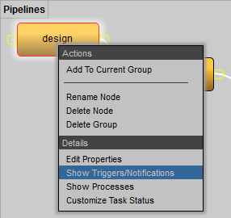
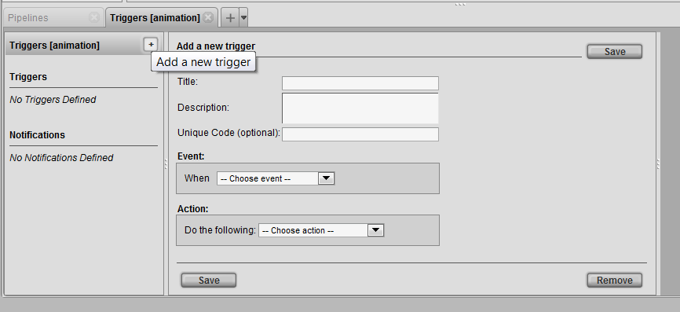
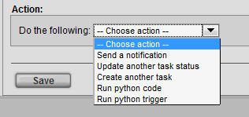
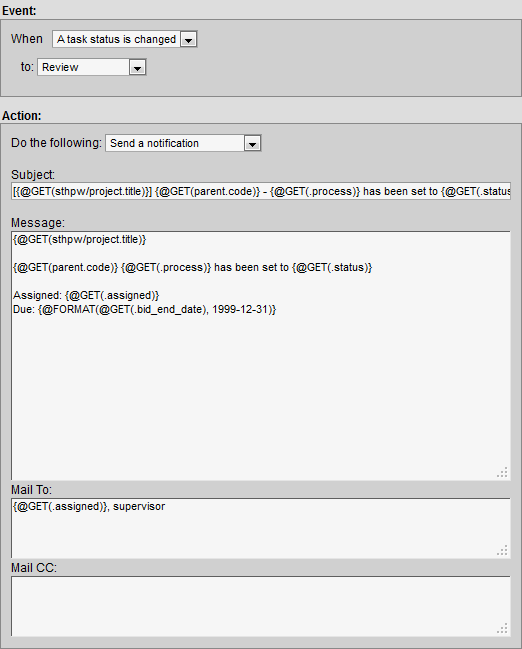
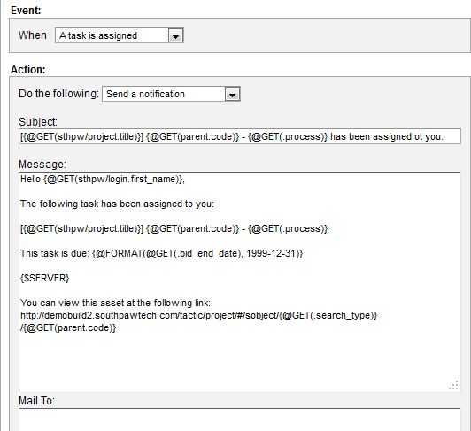

Notifications are sent to inform the user that a particular transaction or event has occurred.
They are stored in a notification_log which can be found under Admin Views -> Site Admin -> Notifications.
Notifications present information reported by transactions. They usually include what items are created or updated in addition to a description of the command. Below is an example of a notification:
With the mail server setting set up properly (set in the TACTIC Config file), TACTIC can send out email notifications to users.
There are 2 perspectives to work from when configuring notifications in TACTIC.
-
Project Workflow - Notifications can be set up per process in a pipeline which are used to automate the pipeline/workflow
-
Project Schema - Notifications can be set up at a simpler level where any of the Raw Database events can be used to trigger a notification regardless of process.
Project Workflow
In the Workflow Editor, right click on a process and choose show notification/trigger to open a tab to define a trigger for that particular process.

This will open a new Triggers tab in the panel at the bottom for the assigned process.
Click the [+] button to insert a trigger. This will open the trigger/notification UI.

Notifications and Triggers work together in many ways. A notification is defined as an Action. To send a notification, an event must occur.
In the Action drop down list Send a Notification must be selected.

Send a Notification - This action will send a notification. The action box will open additional options to insert a subject and message.
Below is an example of a notification being sent on the event when a task status is changed to review:

The Mail To: and Mail CC: input fields accepts the following types of input:
Email - Capability to add regular emails allows to send personal email addresses e.g. joe@my_email.com
Group - Capabilty to send to a group of users in TACTIC e.g. Supervisor
Expression - Capabilty to insert expressions that specifies a user in TACTIC. All expressions are identified by curly brackets "{}". e.g. {@SOBJECT(sthpw/login)}
Send a Notification - This action will send a notification. The action box will open additional options to insert a subject and message.
Below is an example which uses more expressions for a notification being sent whenever a task is assigned.
